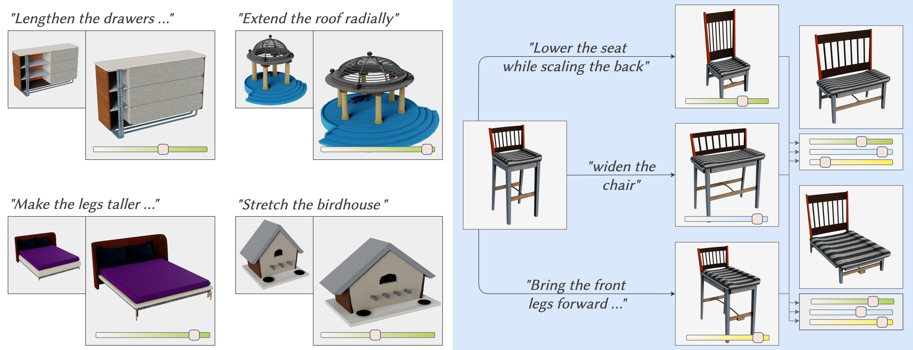
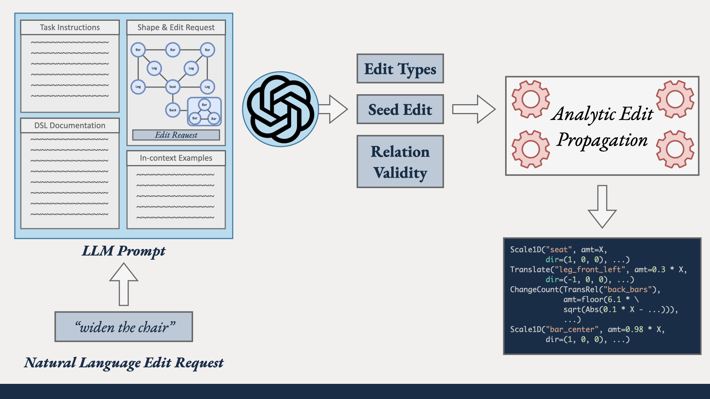
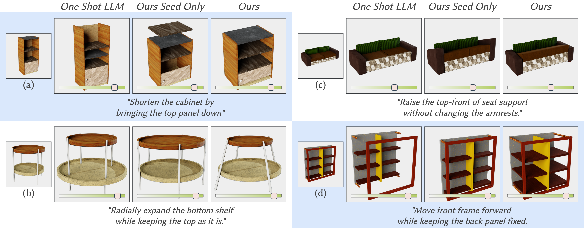

The ability to edit 3D assets from natural language presents a compelling paradigm to aid in the democratization of 3D content creation. However, while natural language is often effective at communicating general intent, it is poorly suited for specifying precise manipulation. To address this gap, we introduce ParSEL, a system that enables controllable editing of high-quality 3D assets from natural language. Given a segmented 3D mesh and an editing request, ParSEL produces a parameterized editing program. Adjusting the program parameters allows users to explore shape variations with a precise control over the magnitudes of edits. To infer editing programs which align with an input edit request, we leverage the abilities of large-language models (LLMs). However, we find that while LLMs excel at identifying initial edit operations, they often fail to infer complete editing programs, and produce outputs that violate shape semantics. To overcome this issue, we introduce Analytical Edit Propagation (AEP), an algorithm which extends a seed edit with additional operations until a complete editing program has been formed. Unlike prior methods, AEP searches for analytical editing operations compatible with a range of possible user edits through the integration of computer algebra systems for geometric analysis. Experimentally we demonstrate ParSEL's effectiveness in enabling controllable editing of 3D objects through natural language requests over alternative system designs.
Creating high-quality 3D assets is a labor-intensive process requiring years of training and expertise. The ability to edit existing assets to create new ones significantly lowers this barrier. However, manually modifying 3D objects, such as adjusting individual vertices or faces, remains tedious and time-consuming. To address this challenge, several efforts have explored the design of more intuitive and user-friendly shape-editing tools (like GeoSemantic Snap).
Recent advancements in Natural Language Processing have inspired methods for editing 3D assets using natural language (ShapeWalk, ShapeTalk, text2mesh). While these methods make editing accessible by removing the need for tool-specific expertise, precise geometric editing remains a challenge. For instance, tasks like sub-part manipulation or spatial rearrangement require users to specify not only what to edit but also how much. Expressing edit magnitude through language is particularly difficult; terms like “moderately widen” or “greatly widen” are subjective, and numerical instructions (e.g., “0.2 units”) may not align intuitively with an object’s scale. This makes natural language a limited tool for achieving precise, controlled edits.
To address the challenge of precise and controllable editing of 3D assets, we introduce ParSEL, a system that combines the intuitiveness of natural language with the precision of parametric control. Users specify “how” to edit through natural language and “how much” through adjustable parameters, seamlessly exploring a family of shape variations (as shown in the video above). Critically, to ensure that the geometric relations remains consistent under a range of parameter variations, we represent all edit operations as closed-form analytical functions of the adjustable control parameters. In order to create such parameterized editing functions, we introduce a custom domain-specific language (DSL). This DSL not only encodes edits as algebraic expressions, but also enables a solver-less and fluid exploration of edits in real time, even on consumer-grade hardware, making it highly accessible.

To ease the creation of these editing programs, we introduce a module that translates natural language edit requests into parameterized editing programs. This module combines the capabilities of large language models (LLMs) with the algebraic reasoning power of computer algebra systems (CAS). LLMs struggle to infer precise adjustments across multiple shape parts due to their limited geometric reasoning abilities, often producing inconsistent or incomplete outputs. We address this with our novel technique termed Analytical Edit Propagation (AEP), a technique that extends partial editing programs generated by LLMs by incorporating additional operators from our domain-specific language (DSL). AEP leverages CAS to analyze geometric relationships between object parts and generates additional closed-form analytical functions that ensure consistency across a range of possible edit magnitudes.


@article{ganeshan2024parsel,
author = {Ganeshan, Aditya and Huang, Ryan and Xu, Xianghao
and Jones, R. Kenny and Ritchie, Daniel},
title = {ParSEL: Parameterized Shape Editing with Language},
year = {2024},
issue_date = {December 2024},
publisher = {Association for Computing Machinery},
address = {New York, NY, USA},
volume = {43},
number = {6},
issn = {0730-0301},
url = {https://doi.org/10.1145/3687922},
doi = {10.1145/3687922},
journal = {ACM Trans. Graph.},
month = nov,
articleno = {197},
numpages = {14},
}We would like to thank the anonymous reviewers for their helpful suggestions. This work was funded in parts by NSF award #1941808 and a Brown University Presidential Fellowship. Daniel Ritchie is an advisor to Geopipe and owns equity in the company. Geopipe is a start-up that is developing 3D technology to build immersive virtual copies of the real world with applications in various fields, including games and architecture.